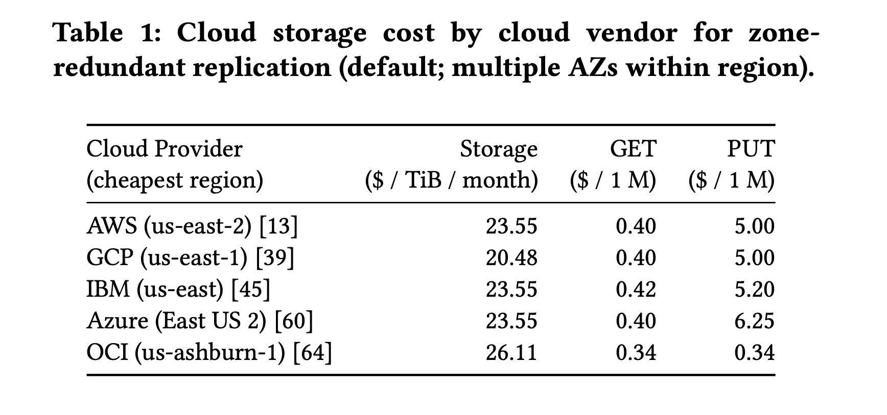
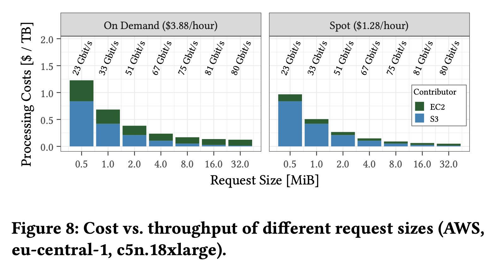
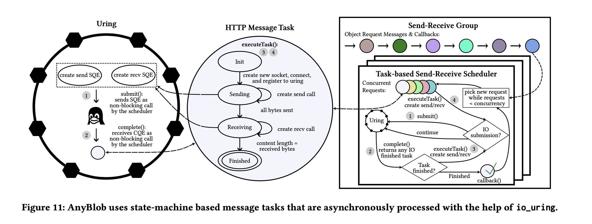
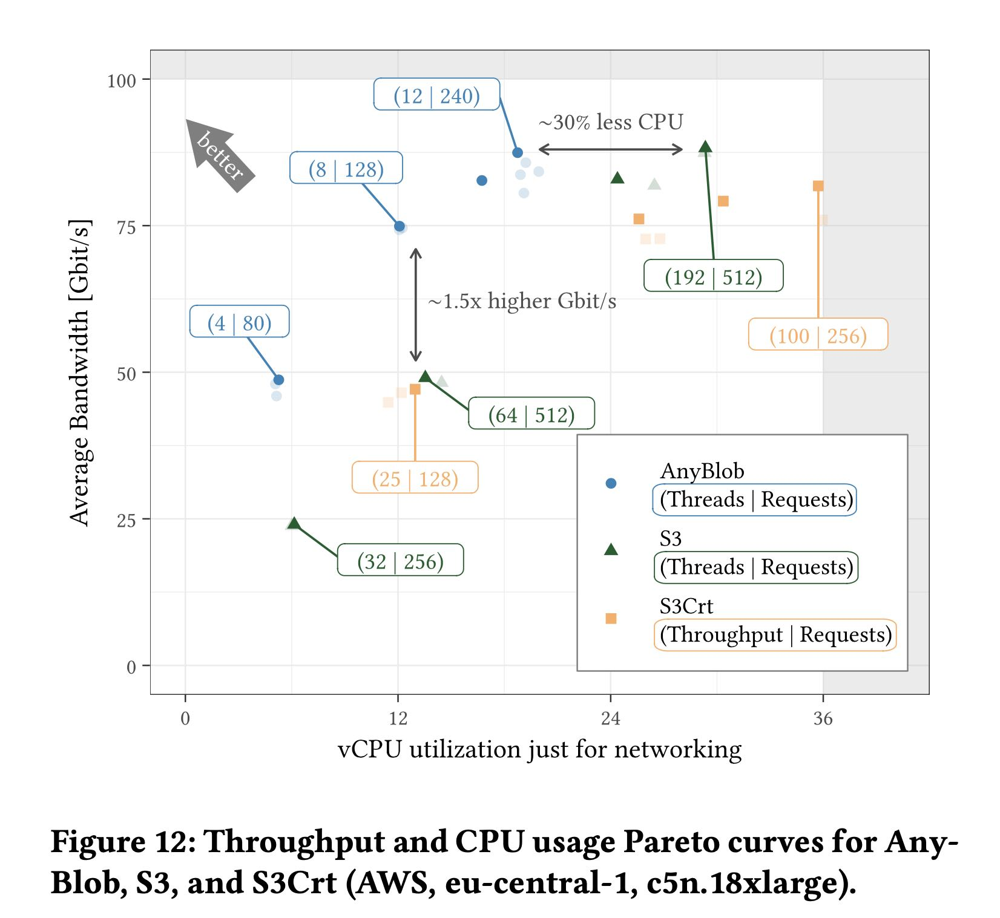
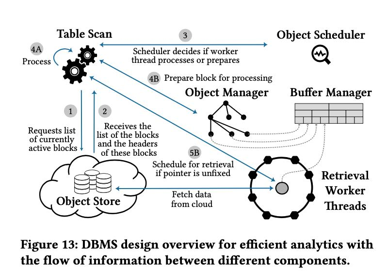
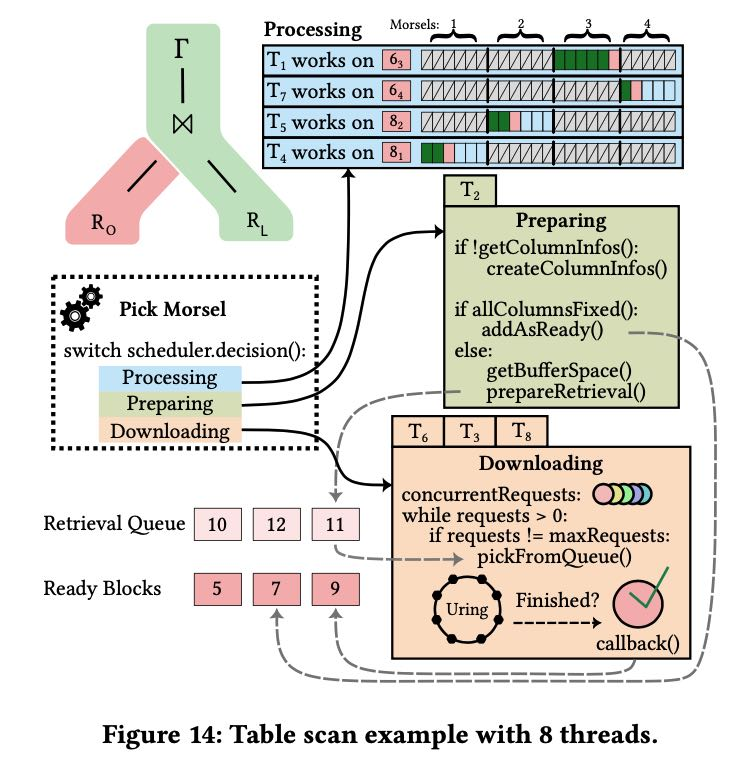
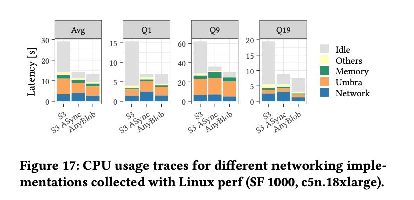

Exploiting Cloud Object Storage for High-Performance Analytics
Table of Contents
这篇论文主要就是讨论如何有效地利用好Cloud Object Storage，如何有效地拉去S3这样的数据，以及如何在Table Scan Operator上结合起来。
For achieving high retrieval performance, we present AnyBlob, a novel download manager for query engines that optimizes throughput while mini- mizing CPU usage. We discuss the integration of high-performance data retrieval in query engines and demonstrate it by incorporating AnyBlob in our database system Umbra.
1. introduction
云存储主要有三个挑战
- Challenge 1: Achieving instance bandwidth. (如何有效地利用线程和block size)
- Challenge 2: Network CPU overhead. (减少network带来的CPU开销尤其是切换开销)
- Challenge 3: Multi-cloud support.
2. cloud storage
几个云存储的成本比较，GCP比AWS/Azure稍微好点，Azure的PUT请求用比AWS要高。

S3 region内部数据传输是不收费的，只收API的费用，跨region传输的话0.02$/GB. 请求上不管是请求1KB还是1GB, 都是计算一次API的费用。
All major cloud vendors structure their object storage pricing similarly. They categorize expenses as storage cost, data retrieval and data modification cost (API cost), and inter-region network transfer cost. Cloud providers operate object stores on the level of a region (e.g., eu-central-1). When accessing data within one region, only API costs are charged because intra-region traffic is free to the object store. On the other hand, AWS inter-region data transfer, for example, from the US east to Europe costs 0.02$/GB.
Surprisingly, retrieval cost in the same region depends only on the number of requests sent to the cloud object store, and does not depend on the object size. Downloading a 1 KiB object costs the same as a 1 TiB object, as long as only one HTTP request is issued.
相比其他其他存储介质EBS/Local SSD/Local HDD来说，S3有独特的优势：
- EBS的带宽没有办法达到instance bandwidth，并且只能在一个instane上（适合本地开发）
- local ssd 费用比较高，大约是7x（适合关键应用）
- local hdd 大硬盘价钱比较好，但是持久性不行。（好像和s3是同质化产品）
Other storage solutions are not as elastic as disaggregated storage and are often more expensive. For example, AWS Elastic Block Storage (EBS) (gp2 SSD) costs 102.4$/TiB compared to 23.2\(/TiB per month. HDD storage pricing is comparable to S3, but bandwidth is very limited. Although EBS is elastic in its size, it can only be attached to a single node. Instance- based SSD storage is also expensive. For example, the price differ- ence between c5.18xlarge and c5d.18xlarge is 0.396\) /h and yields in 1.8 TB NVMe SSD. There, instance storage costs 158.4$ /TB per month, which is 7× more expensive. Another example for instance- based storage is the largest HDD cluster instance d3en.12xlarge. This instance features 24 HDDs with 14 TB storage each at a price of 13.5$/TB per month.
后面就讨论了一下cloud storage的性能问题啥的，大约有这么几个点
- latency上，对于小尺寸first byte latency是最关键的(1KB是25ms，1MB是60ms)，对于大尺寸的RTT则比较关键（大约就稳定在100ms左右了）。
- throughtput上，用16MB大小，同时发起256个请求，可以跑满带宽。small instane允许burst bandwidth, 这个大约可以持续40min.(10Gbps -> 25Gbps)
- size上，有两个因素：small size并行度好，但是API成本高；large size并行度差时间长，但是API成本低。在可以跑满带宽的情况下，8-16MB是最优的block size. 在ec2/s3 cost上都比价好。
- encryption. https在CPU上开销是http的2x. 如果没有跨VPC的话，那么network secure的话，那么使用端加密可能会更好(大约x1.3)
- hedge read. 16MB通常在600ms内返回，只有不到5%的请求超过600ms；first byte latency通常是200ms, 只有不到5%的请求超过200ms.
- parallelism. 大约需要200-500个并发请求，以16MB block size, 可以跑满instance bandwidth(100Gbps).

3. anyblob
这节没怎么看，这个东西主要就是用异步+io_uring来提高S3的下载速度，以及减少CPU overhead. 总之就是aws sdk cpp的S3和S3CRT都不行，看来东西还是要自己写。如果只是http/https协议来用io uring的话，工程可能会低一些，如果开始对接其他私有协议的cloud storage的话那就不好了。

Unified interface with smaller CPU footprint. Different cloud providers have their own download libraries with different APIs and performance characteristics [7, 40, 44, 61, 65]. To offer a unified in- terface, we present a general-purpose and open-source object down- load manager called AnyBlob [36]. In addition to transparently sup- porting multiple clouds, our io_uring-based download manager requires fewer CPU resources than the cloud-vendor-provided ones. Resource usage is vital as our download threads run in parallel with the query engine working on the retrieved data. Existing download libraries start new threads for each parallel request. For example, the S3 download manager of the AWS SDK executes one request per thread using the open-source HTTP library curl. In contrast to spinning up threads for individual requests, AnyBlob uses asynchro- nous requests, which allows us to schedule fewer threads. Because hundreds of requests must be outstanding simultaneously in high- bandwidth networks, a one-to-one thread mapping would result in thread oversubscription. This results in many context switches, which negatively impacts performance and CPU utilization.

论文里面还提到了dns overhead. 缓存endpoint ip, 尽可能地使用大MTU的endpoint
Resolution overhead. In analytical scenarios, many requests are scheduled to the cloud object storage. Section 2.1 highlights that we can connect to different server endpoints. Resolving a domain name for each request adds considerable latency overhead due to additional round trips. Thus, it is essential to cache endpoint IPs. Throughput-based resolver. Our default resolver stores statistics about requests to determine whether an endpoint is performing well. We cache multiple endpoint IPs and schedule requests to these cached IPs. If the throughput of an endpoint is worse than the performance of the other endpoints, we replace this endpoint. Thereby, we allow the load to balance across different endpoints.
MTU-based resolver. We found that the path maximum trans- mission unit (MTU) differs for S3 endpoints. In particular, the de- fault MTU to hosts outside a VPC is typically 1500 bytes. Some S3 nodes, however, support Jumbo frames using an MTU of up to 9001 bytes [9]. Jumbo frames reduce CPU cost significantly because the per-packet kernel CPU overhead is amortized with larger packets.
MTU discovery. The S3 endpoints addressable with a higher path MTU use 8400 bytes as packet size. Our AWS resolver attempts to find hosts that provide good performance and use a higher path MTU. We ping the IP with a payload (> 1500 bytes) and set the DNF (do not fragment) flag to determine if a higher path MTU is available.
4. integration
我觉得这个集成没有那么麻烦，但是里面可优化点还是挺多的，或者说这个模型限制也是挺多的。
整个过程大致就是这样：
- 先从object store拿到所需要的元信息block header
- 根据block header来判断需要读取object上那些范围
- object scheduler来进行调度，判断这些数据是不是都拿过来了。
- 如果还有数据没有拿过来的话，那么就告诉线程去取，这个过程认为是retrieval/prepare阶段
- 如果数据已经到了的话，那么就告诉线程去分析数据，这个过程是process阶段。
- object scheduler会根据数据是否满足条件来决定线程要做什么。

可以看到如果table scan operator一旦运转起来，中间就是不能断的，必须确保这个scan operator需要的数据都拿到了，否则这个代码逻辑会非常复杂。
或者如果table scan operator变成了可中断的执行方式的话，比如说按照column reader来中断，那么这种模型会更加有效率。 table scan operator标记还需要那些columns的数据，一旦这些columsn数据available的话，那么pick morsel就可以调度到它。 不过这个执行模型似乎有点太复杂了，整个执行链条被打断。

5. evaluation
一般我都不太看evaluation. 我觉得这里面通常都是比较好的结果展示，缺陷啥的通常也不说。但是在做evaluation的时候通常有一些工程方面的方法可以学习借鉴。
他们提到了可以使用perf来统计资源使用情况，将CPU使用率归因到不同的组件上。
Retrieval requires significant CPU resources. Figure 17 breaks the query resource CPU utilization down into fine-grained tasks, such as network I/O, memory and buffer management, and process- ing (similar to [66]). We used perf to trace the resource utilization of different functions and aggregate the results. Umbra achieves an average CPU utilization of ∼75% with asynchronous networking. Networking uses a large share of CPU time that accounts for up to 25% of the total utilization, significantly reduced by AnyBlob.

snowflake通常对外只有xsmall, xlarge这样的型号展示，并不告诉用户实际aws机型是什么。2019年有个SO用户发现，在snowflake如果执行一个错误的SQL的话，在error log里面可以看到具体的机型. What are the specifications of a Snowflake server? - Stack Overflow 发现xsmall对应的是c5d.2xl ec2机型，这种逆向工程挺有意思的。